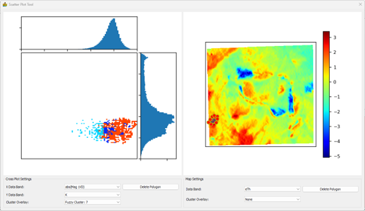

Scatter Plot Tool¶
The scatter plot tool is used for scatter plot analysis. By supplying the results of a cluster analysis, in addition to the raster data input into the cluster analysis, it is also possible to see where the clusters are located within the scatter plots.
The scatter plot tool shows both a scatter plot (1 below) and a view of the raster data (2 below). A polygon can be drawn on either view and the corresponding pixels will be displayed in the other view.

The Cross Plot Settings control what is displayed in the scatter plot:
Histogram of the band selected for the x-axis (X Data Band).
Histogram of the band selected for the y-axis (Y Data Band).
Scatter plot of the two selected bands. Cluster Overlay allows the user to select what will be displayed. It can be a colour map of the histogram amplitudes, or the classes.
The user can draw a polygon around an area of interest on the scatter plot by simply left-clicking on it. The pixels within the polygon will be highlighted in the map view. Click Delete Polygon to remove the polygon.

The Map Settings control what is displayed in the scatter plot:
Data band – The dataset that must be displayed in the map.
Cluster Overlay – The classification results can be displayed. If None is selected the data selected under Data Band will be shown, or the user can select to display one of the classification results.
The user can draw a polygon around an area of interest on the map by simply left-clicking on it. The pixels within the polygon will be highlighted in the scatter plot. Click Delete Polygon to remove the polygon.

The figure below shows an example where an area with high eTh values along the western boundary of the dataset was outlined on the map. The scatter plot shows that this area forms part of three classes in the classification consisting of seven classes.
